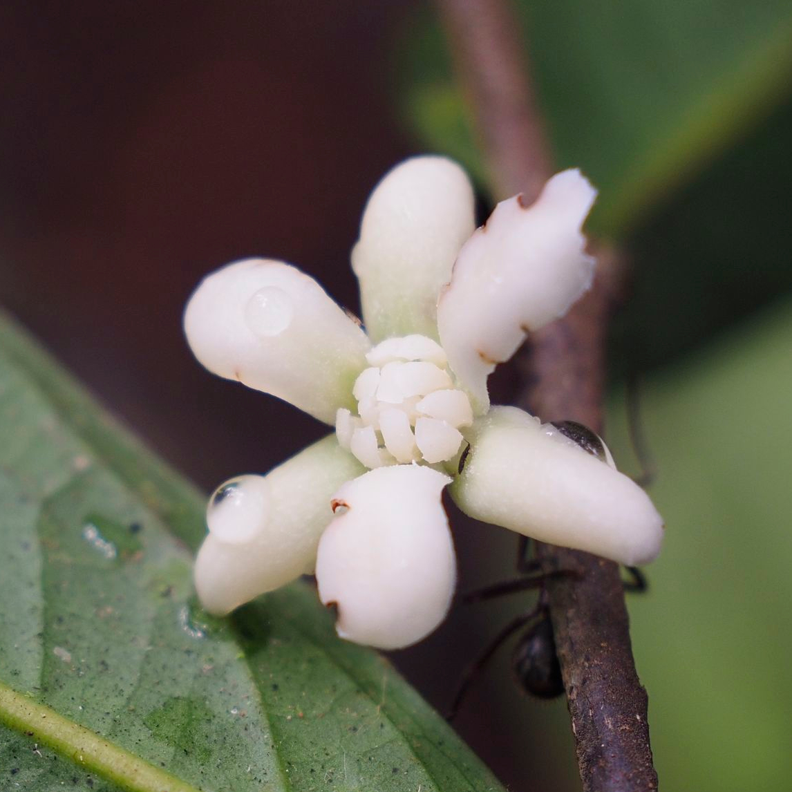
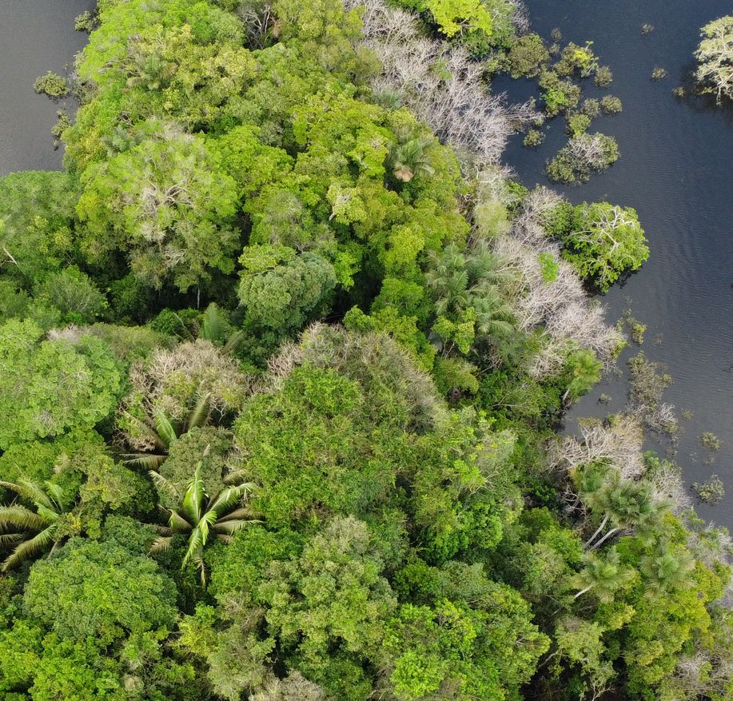
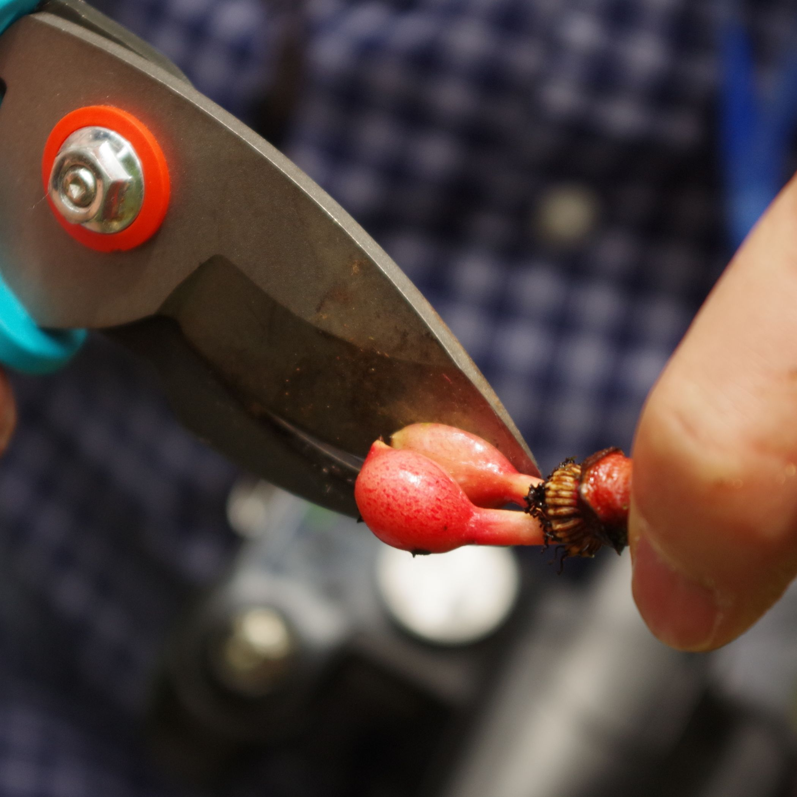
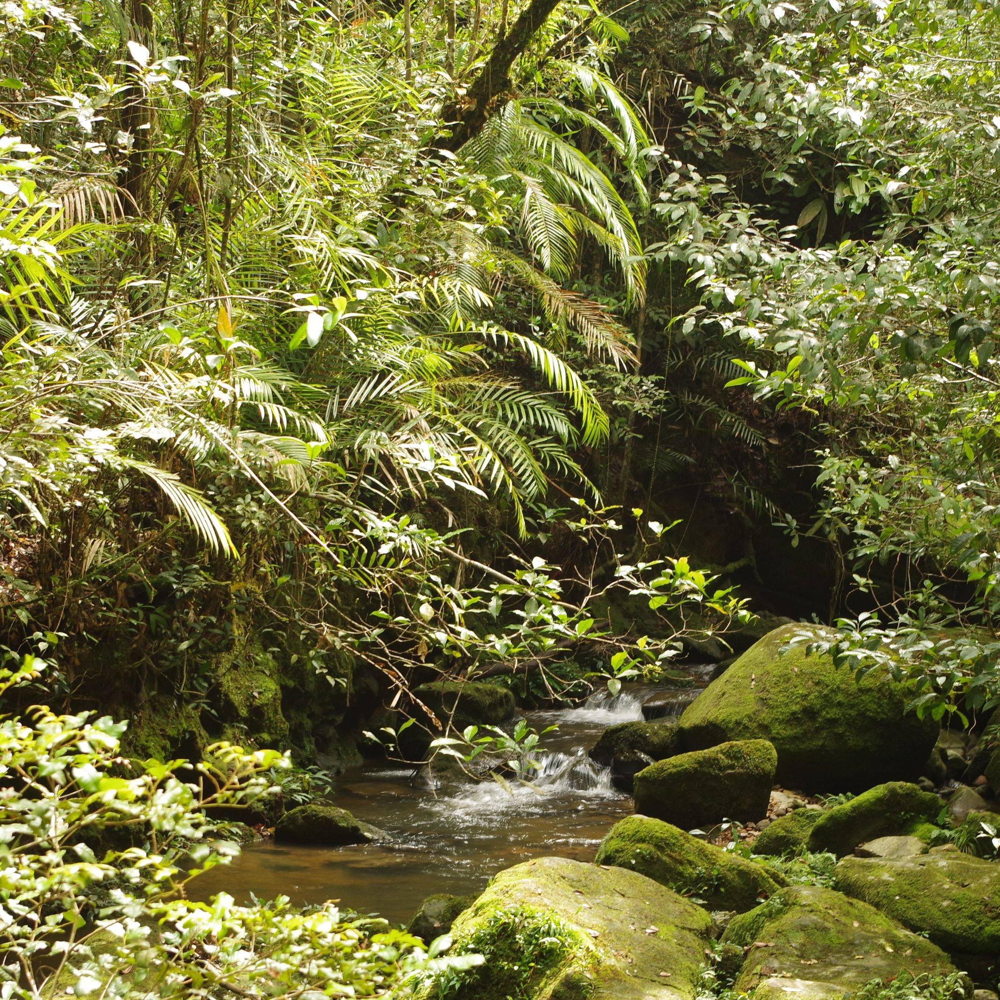
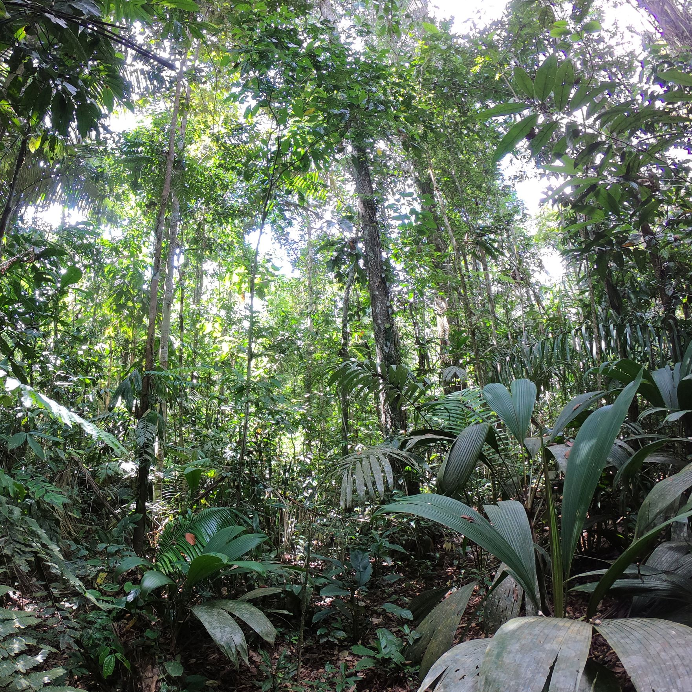
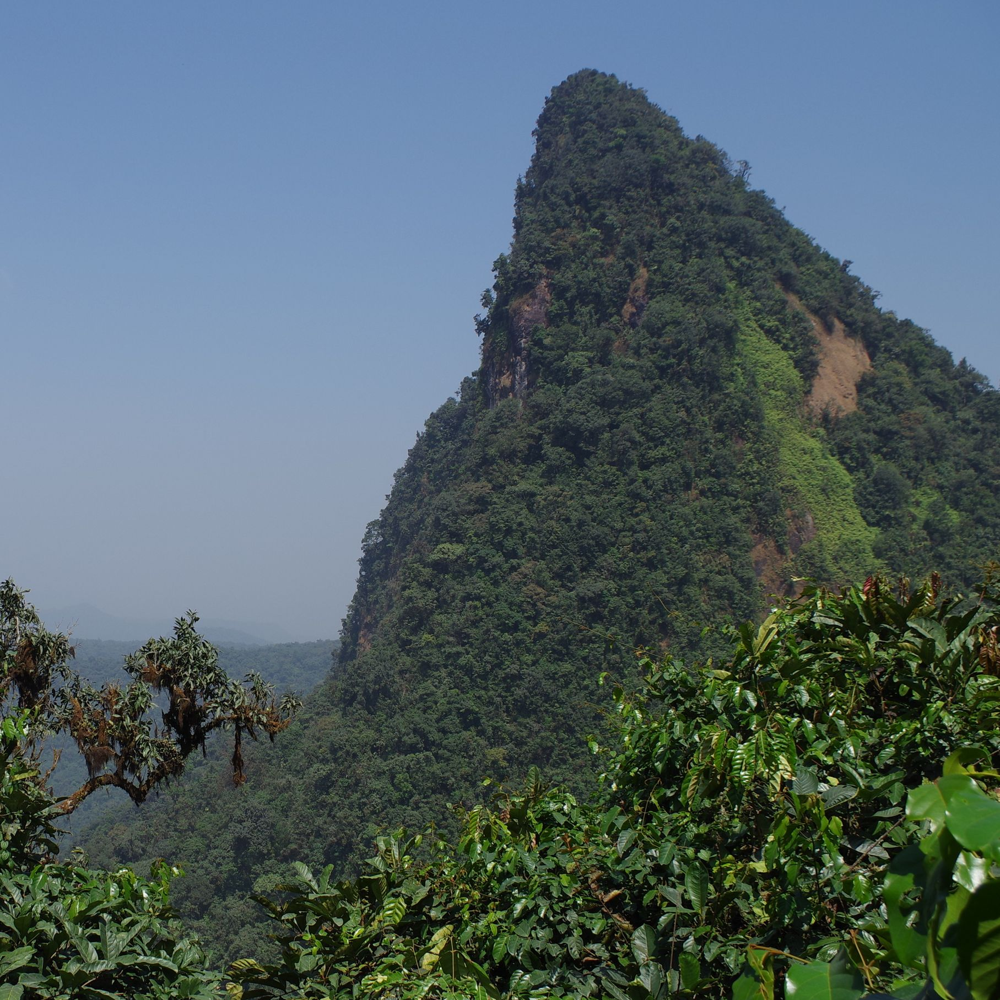

I am Thomas L.P. Couvreur (HDR, DR2), a researcher and botanist at the Institut de Recherche pour le Développement (IRD). My main interest lies in understanding the evolution, resilience, and diversity of tropical biodiversity, and rain forests in particular, one of the most complex and diverse ecosystems on the planet. Rain forests are important global climate regulators and provide subsidence such as food and shelter to millions of people across the tropics. I undertake research in taxonomy, conservation, molecular phylogenetics and phylogeography using DNA sequence data, morphological evolution, and modeling of species distribution at different time intervals. I also undertake research on economically important species (socio-economic studies and documentaries). I focus on two wonderful tropical rain forest plant families palms and the Soursop family Annonaceae. My research has an impact in tropical biodiversity conservation and provides fundamental data towards assessing the influence of ongoing climate change on tropical rain forest biodiversity.



Tropical rain forests are the most biodiverse terrestrial ecosystems on the planet. Over half of the known biodiversity is packed within this biome, yet they spread out over just 7-10% of total land area centered around the equator. They represent an emblematic icon of the wonders of nature. They are true evolutionary labs where "anything goes" and where you can "expect the unexpected". This can be linked to the fact that rain forests have been around since the rise of flowering plants (angiosperms) over 100 million years ago. In the minds of people, rain forests represent the unknown or chaos and trigger sensations of fear and excitement mixed with amazement.
Tropical rain forests have numerous commonly known nicknames such as "lungs of the planet", "treasure trove" or simply "the jungle". This underlines the important local and global importance of this ecosystem for humanity. Indeed, tropical rain forests provide countless ecosystem services to millions of people and act as important climate (local and global) regulators. The Millennium Ecosystem Assessment views loss of biodiversity [of which rain forest are a huge reservoir] as a direct threat to human-well being, impacting society at several levels such as “security, resiliency, social relations, health, and freedom of choices and actions”. Yet, tropical rain forests are under severe pressure from human activity (logging, agriculture, etc) and ongoing climate change. Intact or primary forests are condemned to disappear before my children reach adulthood. These anthropomorphic activities will impact species distributions directly affecting the ecosystems services they provide at local and global levels. These changes will also accelerate the ongoing extinction of numerous species, most of them yet to be described by the scientific community.



The "Tropical Biodiversity Evolution" lab aims to understand how tropical biodiversity in general and tropical rain forests in particular have evolved over time and in the future. What are the evolutionary processes that have affected this diversity through time? How did this rich diversity react to past climate changes? We also want to understand how this diversity will be affected by future global change as well as understand the resilience of this ecosystem. What scenarios can we project for the future of biodiversity in the tropics?
We concentrate on several time frames ranging from ancient processes (tens of millions of years ago) to more recent ones (millions of years ago or thousands of years ago). This wide time frame enables us to use alternative methods for understanding evolutionary processes from molecular phylogenetics using DNA sequence data (between genera and species) to phylogeography and genetic diversity dynamics of selected species (within species or closely related species). We also use future climate models and modeling approaches to infer possible future scenarios of biodiversity evolution. We mainly focus on Africa but have also interests in the Neotropics and South East Asia.
Besides constructing molecular phylogenies we use integrative methods to addresses hypotheses about TRF evolution. These methods include molecular dating, ancestral area reconstructions (biogeography), diversification rate analyses, ancestral character reconstruction (morphology or biomes) and species distribution modeling (using GIS). We are also active in generating new molecular biology protocols for more efficient DNA sequences across more species.
Recently we have also started looking at the socio-economic importance of certain important species and their responses to ongoing climate change in the tropics. Finally, we also undertake research in conservation of plant species. We have mainly been active in IUCN red listing.